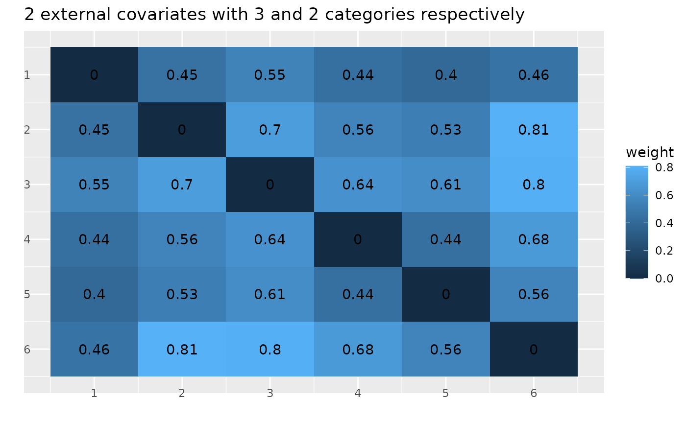

Returns a heatmap of the weight matrix
Usage
hd_weight_matrix(
W,
title = "",
legend_label = "weight",
add_counts_to_cells = TRUE,
add_ticks_labels = TRUE,
t = -6,
r = -8
)Arguments
- W
Weight matrix
- title
Title plot (Default is none)
- legend_label
Title of the legend (Default: "weight")
- add_counts_to_cells
If
TRUE, counts from the matrix are added to the plot (Default:TRUE)- add_ticks_labels
If
TRUE, the number corresponding to the graph is add to the plot (Default:TRUE)- t
Distance between tick labels and x-axis (Default: -6)
- r
Distance between tick labels and y-axis (Default: -8)
Examples
W_uniform <- round(create_weight_matrix(type="uniform-random", 3, 2), 2)
hd_weight_matrix(W_uniform, title = "2 external covariates with 3 and 2 categories respectively")
